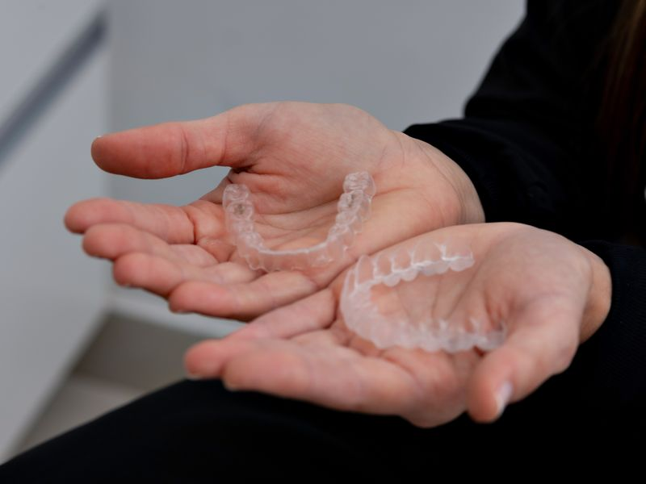

Clareamento dental
Protocolos supervisionados, precedidos de avaliação clínica e conduzidos com controle de sensibilidade.

Avaliação antes do clareamento
O clareamento começa por um exame clínico. Cáries não tratadas, restaurações infiltradas, recessão gengival e sensibilidade prévia precisam ser identificadas antes de qualquer aplicação, porque interferem tanto no conforto quanto no resultado.
Também é nessa etapa que se define a origem do escurecimento. Manchas extrínsecas, ligadas a café, chá, vinho ou tabaco, respondem de forma diferente de alterações intrínsecas, associadas a envelhecimento dentário, traumatismo ou uso de medicamentos.
Protocolos disponíveis
O clareamento de consultório usa agente em concentração mais alta, aplicado pelo profissional em sessões controladas. O clareamento caseiro supervisionado emprega moldeiras individualizadas e concentração menor, com uso diário por um período determinado. Os dois protocolos podem ser combinados, conforme o caso.
A escolha considera o grau de escurecimento, a sensibilidade prévia e a rotina do paciente. Em ambos os casos, a supervisão profissional é o que permite ajustar concentração e tempo diante da resposta observada.
Sensibilidade
A sensibilidade transitória é o efeito adverso mais comum e costuma se resolver em poucos dias após o término. Medidas preventivas, como dessensibilizantes aplicados antes e durante o tratamento, e o ajuste do intervalo entre sessões, ajudam a manter o desconforto sob controle.
Manutenção do resultado
Após o clareamento, recomenda-se atenção redobrada nas primeiras semanas com alimentos e bebidas pigmentantes. A longo prazo, higiene adequada e consultas de acompanhamento definem quanto tempo o resultado se mantém. Sessões de manutenção periódicas são parte esperada do processo.
Perguntas frequentes
Clareamento danifica o esmalte?
Realizado sob supervisão profissional, com concentração e tempo de aplicação adequados, o clareamento não provoca dano estrutural ao esmalte. O risco está associado ao uso indiscriminado de produtos sem avaliação prévia.
Quanto tempo dura o resultado?
Varia conforme hábitos alimentares, tabagismo e higiene bucal. É comum haver necessidade de sessões de manutenção periódicas.
Restaurações e próteses clareiam junto?
Não. Materiais restauradores não respondem ao agente clareador. Quando há restaurações visíveis, pode ser necessário substituí-las após o clareamento para igualar a cor.
Posso fazer durante o tratamento ortodôntico?
Com alinhadores removíveis é possível em muitos casos, com avaliação. Com aparelho fixo, o clareamento costuma ser adiado para depois da remoção, para evitar diferença de cor nas áreas cobertas.
Avalie o seu caso
Cada indicação depende de exame clínico. Agende uma avaliação para saber o que se aplica a você.